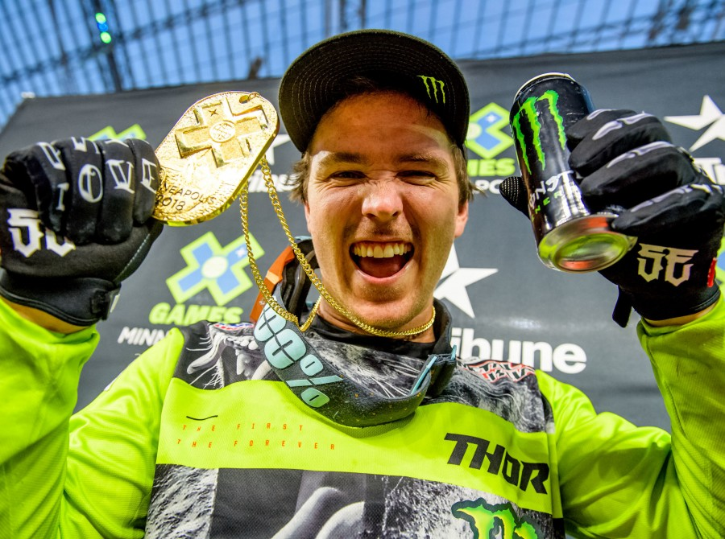

Prepare-se para a evolução mais recente da principal vitrine de esportes de ação do mundo! Em apenas alguns dias, a equipe de atletas de classe mundial da Monster Energy competirá no X Games Shanghai 2019. Como uma experiência única de esportes de ação, o X Games Shanghai receberá alguns dos maiores nomes do BMX, motocross e skate em uma batalha por Medalhas dos X Games de 1 a 2 de junho na Zona Internacional de Turismo e Resorts de Xangai.
X Games Shanghai contará com quase 75 atletas de 12 países em sete disciplinas do Skate, BMX e Moto X. Cada dia apresentará uma programação completa de competições, incluindo finais e apresentações de medalhas. Juntamente com as competições e atletas de esportes de ação de classe mundial, o X Games Shanghai também incluirá apresentações musicais, instalações de arte e uma experiência de festival enquanto mostra a cultura jovem da China.

A Monster Energy está ansiosa para trazer a novidade para a China com uma equipe de grande impacto, incluindo grandes concorrentes como Nyjah Huston (Skate), James Foster (BMX) e Jackson Strong (Moto X).
No skate, o evento Skateboard Street de domingo verá o atual campeão da Super Crown Huston do SLS procurando sua décima medalha de ouro na X Games Street. Recém vencido na parada do SLS World Tour do fim de semana passado em Londres, o jogador de 24 anos que compete nos X Games desde os 11 anos de idade estará enfrentando um campo empilhado dos melhores skatistas de rua do mundo. Huston já detém o recorde de maior número de medalhas e medalhas de ouro nos X Games Street (14 e contando), mas reivindicar uma vitória em Xangai não será fácil: o maior rival de Huston é o companheiro de equipe da Monster Energy, Kelvin Hoefler, de São Paulo, Brasil, que manteve logo atrás no Campeonato Mundial SLS do ano passado. Recentemente transferido para a Califórnia, o skatista de rua de 26 anos conquistou medalhas em todas as aparições nos X Games desde que estreou com ouro consecutivo em Minneapolis (2017) e Noruega (2018). Prepare-se para uma batalha pesada no percurso de rua inovador que apresenta um obstáculo do dragão chinês como peça central neste fim de semana.
No evento Skateboard Big Air, o novato de 18 anos Trey Wood retorna à Mega Ramp como uma ameaça de pódio de boa-fé. Com alguns novos truques na manga, Wood ganhou medalhas de bronze Big Air consecutivas nos X Games em 2018 (Minneapolis e Sydney) e ficou entre os cinco primeiros em quatro de seis partidas no Big Air. Ele tinha apenas 11 anos de idade quando competiu pela Big Air na X Games Los Angeles em 2012 e, desde então, evoluiu para um piloto completo, com sérias costeletas na disciplina de skate do parque. O novato será acompanhado por um dos pioneiros do skate Big Air: o australiano Jake Brown está de volta para mais depois de seis medalhas de ouro nos X Games e 23 participações nos X Games. Completando o campo, o jovem arma do Monster Army, Evan "Big E" Doherty, de Valley Center, Califórnia, fará sua terceira aparição nos X Games neste fim de semana. Cuidado com o jovem de 16 anos que conseguiu seu primeiro 900 aos 11 anos e já competiu em mais de 100 eventos.
Vamos para o Freestyle Motocross, onde a Monster Energy brilha em Xangai com um pelotão dominante de novatos e lendas no esporte. Começando, o Moto X Best Trick do sábado comemora o retorno do competidor de maior sucesso na disciplina na história dos X Games: Jackson Strong da Monster Energy está de volta depois de perder o X Games Sydney 2018 devido a uma lesão e procurando expandir um registro perfeito de cinco medalhas em cinco partidas (4 de ouro, 1 de prata). 'Jacko' treinou em seu complexo no interior da Austrália e empolgou os espectadores em março com a estréia de seu recurso de televisão que ultrapassa fronteiras: 'Moto X Dirt Part 2, Jackson Strong'.
Também disputando o pódio de Moto X Best Trick, seu companheiro de equipe Monster Energy e o ícone australiano de motocross Josh Sheehan tentará melhorar uma medalha de bronze em Sydney 2018. A inovadora FMX Taka Higashino estará exibindo uma vitrine de motocross freestyle em seus 13os X Games aparência. O três vezes medalhista de ouro nos X Games será o competidor mais antigo da disciplina nos X Games Shanghai, enquanto o mais jovem é Harry Bink, da Monster Energy, que perdeu o pódio em Minneapolis no ano passado depois de lidar com um ombro deslocado. O público em Xangai está em uma sessão lendária, já que o esquadrão contribuiu com alguns feitos importantes para a história do motocross, incluindo: o primeiro backflip triplo do mundo (Sheehan, 2015), o primeiro flip da Rock Solid (Bink, 2017) e o primeiro japonês atleta ganhando uma medalha dos X Games (Higashino, 2010).
No Moto X Best Whip, toda a equipe de motocross da Monster Energy enviará este mega kicker neste domingo com ares contorcidos, também conhecidos como 'chicotes'. Nesta exibição espetacular que favorece a dificuldade do estilo em detrimento do truque, o homem a vencer é Jarryd McNeil, o motor de motocross australiano da Monster Energy, que também o está enviando no Moto X Best Trick. No X Games Sydney 2018, a lenda do motocross de 27 anos defendeu sua medalha de ouro no Moto X Best Whip para se tornar o atleta australiano mais vencedor na história dos X Games, com sete medalhas de ouro na carreira e 12 medalhas no total.
Por último, mas definitivamente não menos importante, a Monster Energy participa dos eventos de BMX do fim de semana com uma equipe de candidatos ao pódio. A ação começará no sábado com o BMX Big Air, onde James Foster, da Monster Energy, de Redlands, Califórnia, está procurando melhorar seu bronze no BMX Big Air da X Games Sydney 2018 e voltar ao topo depois de vencer em Minneapolis 2017 e 2018. Se vencer em Xangai, Foster amarraria os BMX Chad Kagy e Kevin Robinson pela maioria das medalhas de ouro na disciplina. Ele se juntará ao companheiro de equipe e lenda australiana de BMX Andy Buckworth, que é um dos poucos pilotos do planeta com um frontflip duplo de BMX e já tem uma medalha de bronze nos X Games Big Air em seu nome.
E, finalmente, todos os olhos estarão voltados para o piloto da Monster Energy, Alex Donnachie, na competição de BMX Street na noite de sábado. Em uma performance histórica nos X Games Sydney 2018, o estreante conquistou a medalha de ouro e se tornou a primeira pessoa